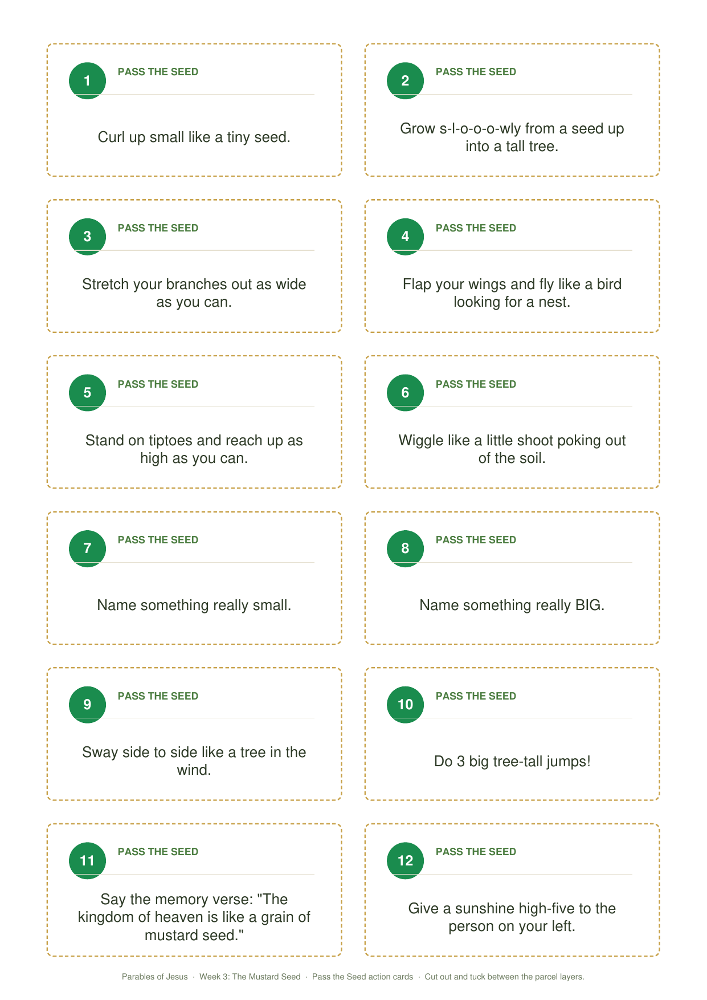
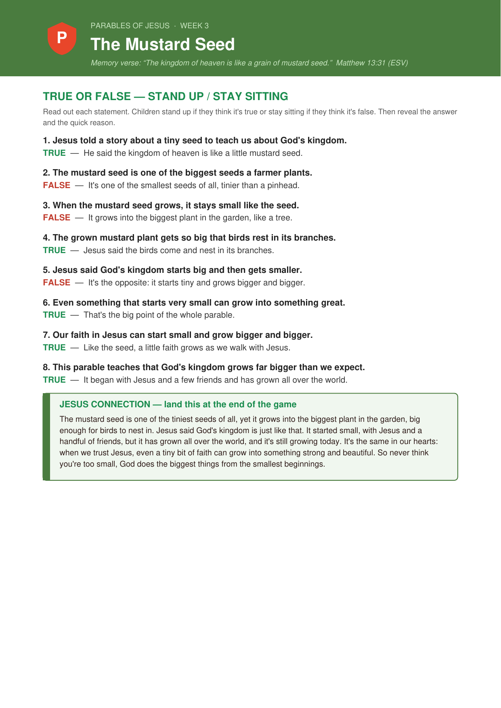
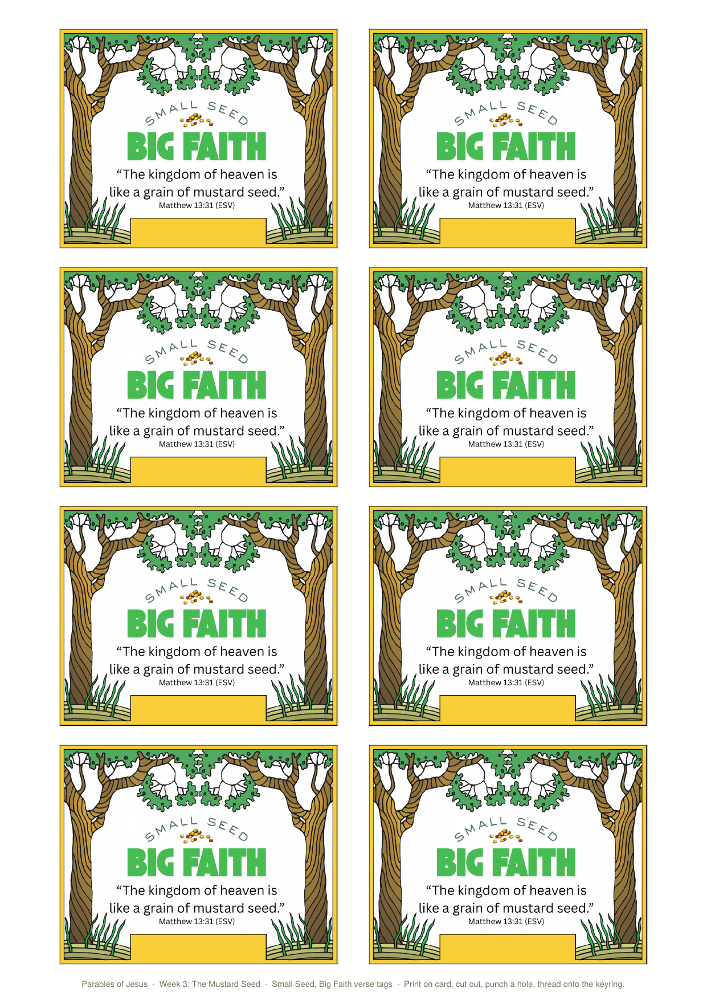
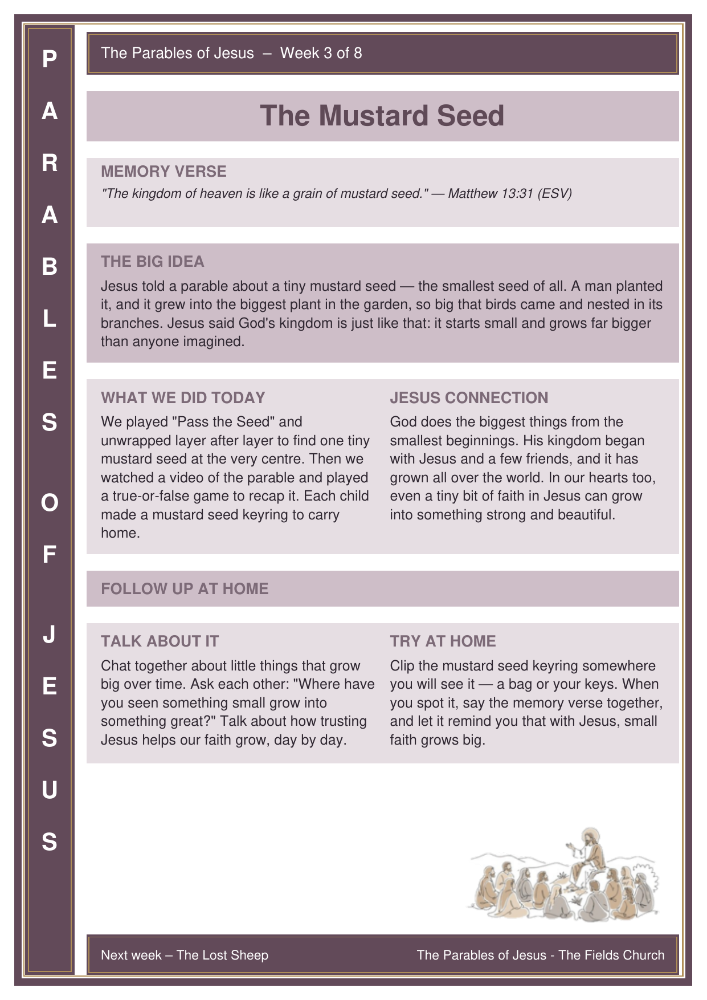

Welcome back! So far we’ve met the farmer scattering seed (and how God wants His word to grow deep roots in us) and the wise and foolish builders (building our lives on Jesus, our rock). This week Jesus tells a parable about something very, very small — a tiny mustard seed — and what it grows into. Get the children thinking about small things that become big before the story begins.
If you can, bring a few tiny seeds to pass around — mustard, poppy, or even a grain of sand — so the children can see just how small a seed can be.
A circle game before the story — “pass the parcel” with a twist. The parcel starts big and bulky, but layer by layer it shrinks down to reveal one tiny mustard seed at the very centre. That surprise sets up the whole parable we’re about to hear.
Before the Session
- Take one real mustard seed (or a tiny bead or dried pea) and wrap it in many, many layers of paper — the more layers the better, so the parcel starts nice and big.
- Optional: tuck a little “grow” action or question between a few of the layers — e.g. “stretch up tall like a tree”, “name something small”, or “flap like a bird”.
- Have the Ready, Set, Go! song (below) ready as the music.
How to Play
- Children sit in a circle. Start the music and pass the parcel around.
- When you pause the music, the child holding it peels off one layer (and does the action or answers the question if there’s one tucked inside).
- Start the music again and keep going — point out that the parcel is getting smaller and smaller.
- The child who unwraps the very last layer finds the tiny mustard seed. Hold it up: “This is the smallest seed of all — and today we’ll hear what Jesus said it grows into!”
Action Cards
Twelve ready-made cards (enough for a group of 12) to tuck between the parcel layers — a mix of “grow” actions and quick questions. Print on card and cut them out.

Bible passage: Matthew 13:31–32 (also Mark 4:30–32 and Luke 13:18–19)
Watch the video together, then play the true-or-false recap below.
▶︎ Watch the Bible Story VideoTrue or False – Stand Up / Stay Sitting
Read out a statement about the story: children stand up if they think it’s true and stay sitting if they think it’s false. After each one, reveal the answer and say the quick reason.
Printable leader card — all the statements, answers, and the Jesus Connection to finish on:

Jesus Connection: The mustard seed is one of the tiniest seeds of all — yet it grows into the biggest plant in the garden, big enough for birds to nest in. Jesus said God’s kingdom is just like that. It started small — with Jesus and a handful of friends — but it has grown and grown all over the world, and it’s still growing today. And it’s the same in our own hearts: when we trust Jesus, even a tiny bit of faith can grow into something strong and beautiful. So never think you’re too small — God does the biggest things from the smallest beginnings.
🙏 Prayer
Dear God, thank You that You do big things from small beginnings. Thank You that Your kingdom keeps growing all over the world. Please help our faith to grow too — a little bit bigger every day — as we trust and follow Jesus. Remind us that we are never too small for You to use. Thank You for Jesus. Amen.
Each child makes a little keyring with a real mustard seed sealed inside a clear bead or pouch, tied to a verse tag — a tiny reminder to carry that small faith grows big.
Before the Session
- Pick up split-ring keyrings (or ball-chain / cord loops) — one per child.
- Get real mustard seeds and a way to hold one seed each: tiny clear screw-top beads/vials, or small press-seal bead capsules. A dot of clear glue seals them shut.
- Print the verse tags (below) onto stiff card, one per child, and punch a hole in each.
- Set out coloured permanent markers to decorate the tags.
Materials (per child)
- One split-ring keyring or cord loop
- One real mustard seed in a clear bead/vial (sealed)
- A printed “Mustard Seed” verse tag (on stiff card, hole-punched)
- Coloured permanent markers
Steps
- Decorate the verse tag with the coloured markers — the older children could add the word “FAITH” or draw a little tree with birds.
- Say the memory verse together while everyone finishes decorating.
- Thread the sealed mustard-seed bead and the verse tag onto the keyring.
- Clip it to a bag or keys at home — a tiny seed that says a big truth: with Jesus, small faith grows big.
“Small Seed, Big Faith” Verse Tags
Print on stiff card, one per child, and punch a hole at the top. Each tag has the memory verse (Matthew 13:31) and a name box. One A4 sheet makes 8 tags.

Print one per child to send home. Preview below — use the button to download the printable sheet.
